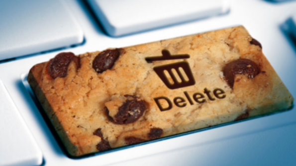

GDPR handler om at sikre sine kunders og ansattes personoplysninger. Virksomhedsejere skal være klar over reglerne om databesktyttelse og er ens ansvar, hvis du behandler personoplysninger. Det kan være, hvis du indsamler eller modtager informationer om dine kunder i forbindelse med deres køb af varer. Et grundlæggende princip er, at virksomheder kun må indsamle og behandle de personoplysninger, der er nødvendige for at drive virksomheden. Der er forskellige måder at behandle personoplysninger ud fra om det er almindelige eller følsomme personoplysninger. Man skal blandt andet være opmærksom på, om du skal have samtykke fra din kunde eller din medarbejder, eller om du har andet lovlig grundlag for behandling. Det vil typisk være at man skal have samtykke, hvis man ønsker at bruge personoplysninger. I EU har man ønsket at, bøderne skal have en afskrækkede effekt, så virksomheder overholder lovgivningen. En virksom kan risikere bøder på op til 20 millioner euro eller cirka 148 millioner danske kroner, og den ansvarlige kan også komme i fængsel.
1. Samtykke kræver en aktiv handling fra brugeren. Det anses ikke længere som et gyldigt samtykke at brugeren klikker sig videre på websitet – ligesom forud afkrydsede felter ikke ses som gyldigt samtykke. 2. Brugeren skal sige OK før der sættes statiskcookies 3. Der skal oplyses om cookiernes funktionsvarighed altså deres udløbsdato
1. Anvend et cookie-banner i et overlay, som fylder hele skærmen 2. Find en teknisk løsning på at sætte de rigtige cookies, efter brugeren har giver samtykke 3. Brug et automatisk værktøj til din cookiedeklaration, der selv aflæser udløbsdatoen på alle de cookies dit website har
1. Slet dine cookies, men så starter du på en frisk start. Dine adgangskoder bliver ikke gemt så husk dem. Det er også forskelligt hvordan du gør det pga. din browser du bruger. 2. Slå tredjeparts-cookies fra. Selv om du sletter alle cookies vil din browser begynde at tage nye op, lige når du går på nettet igen. Der er nogle hjemmesider og programmer man ikke kan bruge, hvis man slår det fra 3. Du kan bruge en anonym browser også kaldet inkognito, som gør at browseren ikke gemmer nogen form for cookies. Det er forskelligt fra browser til browser, hvordan man slår privat browsing til. 4. Brug forskellige udvidelser til din browser som gør det for dig. Aarhus Universitet har lavet en udvidelsen Consent-O-Matic som vil automatisk svare på cookie-pop-up vinduer. Man vælger selv hvilke cookies den skal acceptere.
Identitetstyveri altså at en person uden at få lov anvender en andens persons oplysninger til f.eks. at optage lån, købte ting eller chikanere på forskellige måder. De oplysninger der kan blive misbrugt, kan være CPR-nummer, forskellige adgangskoder, NemID eller andre personfølsomme data. Hvis en anden person bruger en persons kreditoplysninger og misbruger dem, er det ikke identitetstyveri. Fordi der er ikke tale om direkte personlige oplysninger
